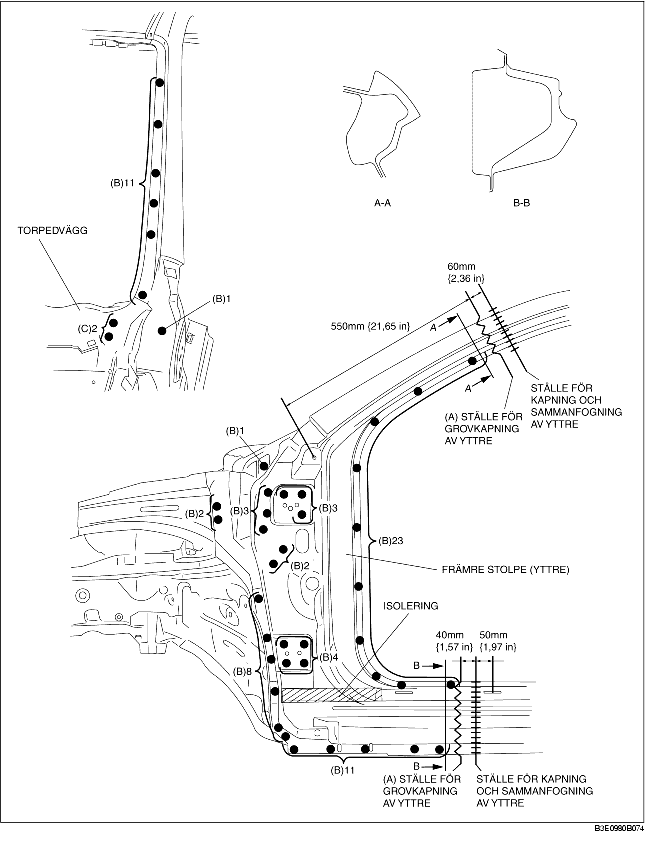
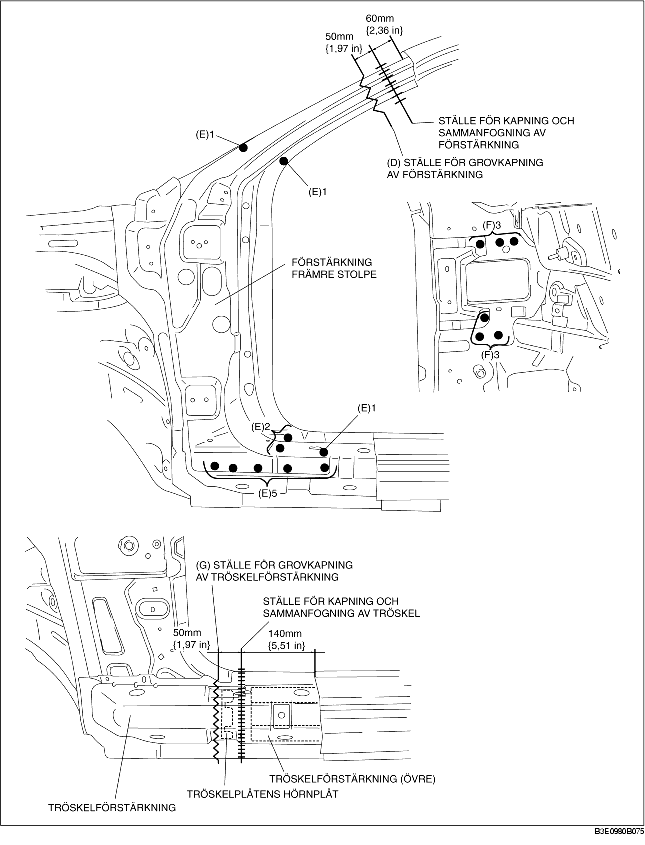
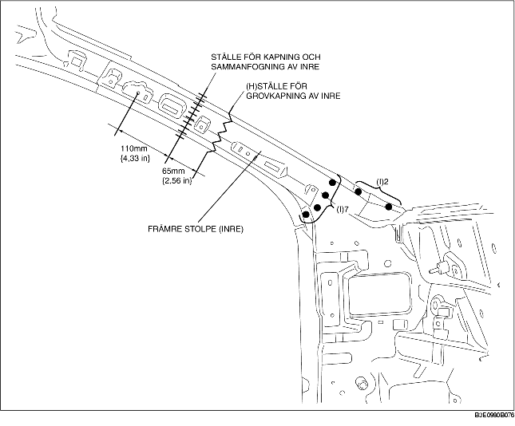

1. Grovkapa område (A) och borra de 69 punkter som markeras med (B).
2. När den främre stolpen (yttre) demonteras, kan torpedväggen komma i vägen för den främre stolpen (yttre) och försvåra demonteringen. Borra därför de 2 punkter som markeras med (C) och öppna sedan torpedväggen utåt.
3. Demontera den främre stolpen (yttre).

4. Grovkapa område (D) och borra de 10 punkter som markeras med (E).
5. Borra de 6 punkter som markeras med (F) inifrån.
6. Demontera den främre stolpens förstärkning.
7. Grovkapa området (G) och demontera tröskelförstärkningen.

8. Grovkapa området (H), borra de 9 punkter som markeras med (I) och ta sedan bort den främre stolpen (inre).
